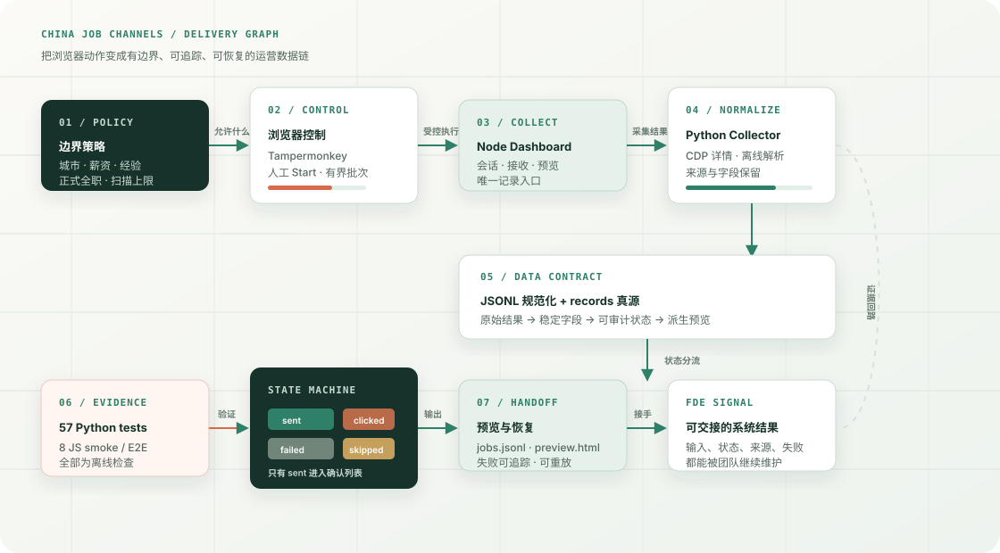

57 项 Python unittest 与 8 个 JavaScript smoke / E2E 检查脚本通过；不触发真实站点动作。
PROJECT 04 / LOCAL BUILD / DATA OPERATIONS
NODE + PYTHON + JSONL · OFFLINE VERIFIED
China Job Channels
有界求职运营工作台
把依赖浏览器登录态、第三方页面和人工判断的求职运营问题，收敛成一条能被检查、恢复和交接的数据链。
DELIVERY SIGNALFACT-BOUND
不是“自动点得多快”，而是每个动作都能回答：
- 01输入是否在允许范围
- 02结果处于什么状态
- 03失败后能否恢复与交接
57Python 离线测试通过
01 / SYSTEM MAP
从边界策略到可交接结果
把采集、规范化、状态、恢复和验证放在同一张图里，招聘者可以先看系统判断，再看代码入口。

02 / DELIVERY CHAIN
我把模糊运营动作拆成五个可检查的交付面
每一面都有明确输入、输出和边界，方便团队评审，也方便 Agent 在受控上下文里协作。
- 01
策略边界
先固定城市、岗位、薪资、经验和批次上限，避免“候选池越大越好”的失控目标。
产物：筛选规则与运行约束 - 02
受控执行
浏览器端只在人工 Start 后执行有界批次；页面插件不承担数据真源。
产物：Userscript 控制面 - 03
数据契约
Node 与 Python 的结果统一收敛到稳定 JSONL 字段，保留来源、时间和状态。
产物：规范化记录 - 04
状态真源
把 sent、clicked、failed、skipped_qualification 分开，只有确认发送才进入已确认列表。
产物：可审计状态机 - 05
验证交接
脚本检查、离线测试、预览文件和恢复入口一起交付，失败不会被“成功”文案掩盖。
产物：验证记录与启动说明
03 / STATE & BOUNDARY
把“尝试”与“完成”分开，系统才可信
这是我在 FDE 场景里最看重的工程判断：状态名称、来源和恢复路径必须能被别人复核。
状态含义是否进入确认列表
sent平台回执或明确证据确认已发送是
clicked发生点击或尝试，但没有完成证据否
failed入口、页面或传输失败，保留原因待恢复否
skipped不满足筛选边界，主动跳过且不触发动作否
04 / EVIDENCE & HANDOFF
交付结果可以被运行、阅读和接手
这组证据把“我会做”变成招聘者可以继续追问的具体入口。
稳定记录与派生预览分层，结果可阅读、可重建，不把临时页面当作真源。
Dashboard 先持久化记录，再刷新派生产物；失败状态可回放和复核。
团队接手时能知道运行前提、边界、未验证项和下一步，而不是只拿到一段脚本。
NEXT INTERVIEW THREAD